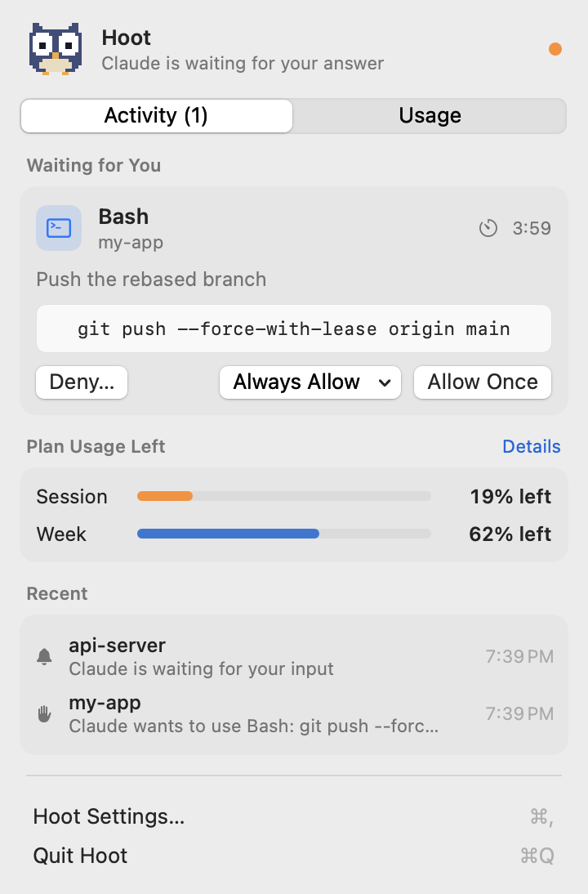
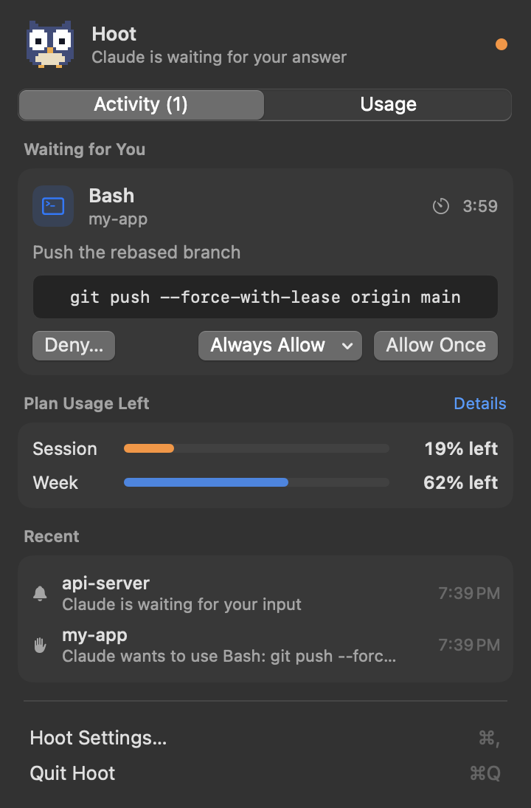
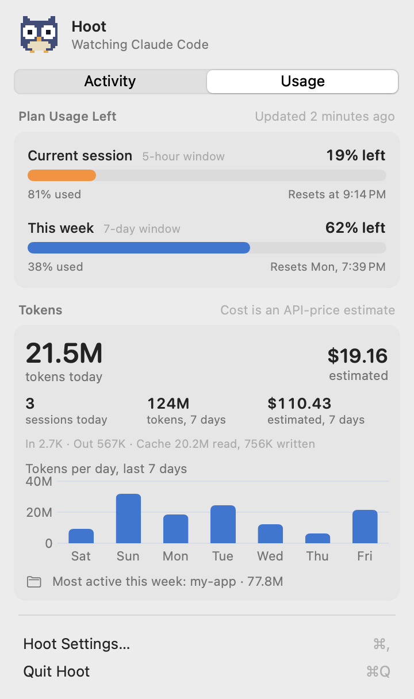
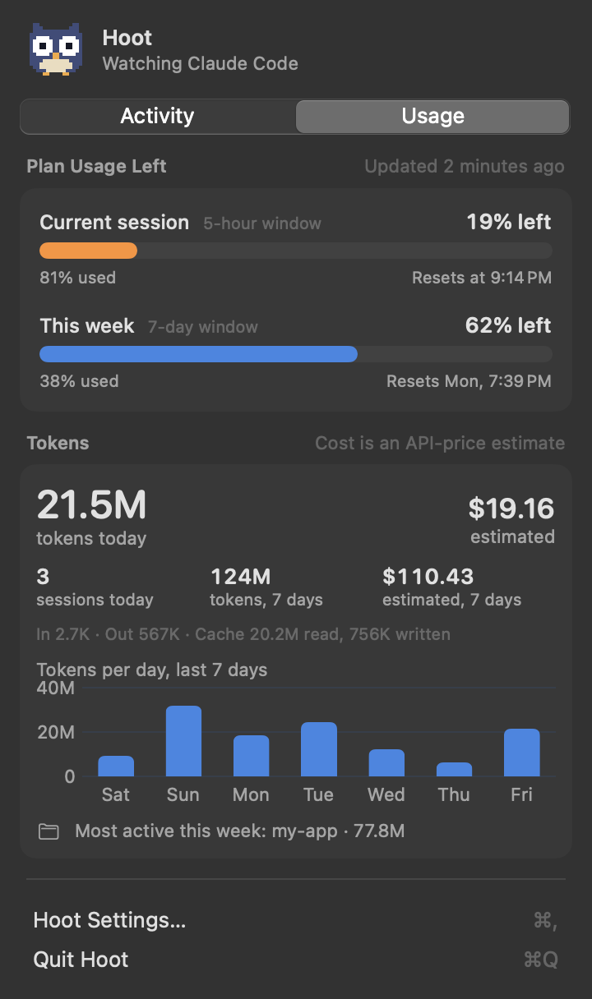

Answer Claude Code from your menu bar.
Hoot taps you on the shoulder when Claude Code needs you and you're not looking at the terminal. Approve commands, answer questions and review plans from the menu bar, and keep an eye on your usage.
Demo with sample data (42 seconds, no sound). Read what it shows
- Claude Code is working in a terminal while you're in another app.
- Claude needs permission to run
git push --force-with-lease origin main, so Hoot sends a notification. - Hoot's menu shows the exact command, with Deny, Always Allow and Allow Once.
- After answering from the menu bar, the terminal carries on by itself.
- Claude asks which database to use: pick an option, or type your own answer.
- Claude has a plan: approve it, or send it back with feedback.
- The Usage tab shows how much of your 5-hour session and week is used, plus tokens and an estimated cost.
- The menu bar shows session usage right next to the owl.
Unofficial and not affiliated with Anthropic. "Claude" and "Claude Code" are trademarks of Anthropic.
Everything Claude needs from you, in one place
Claude Code pauses whenever it needs a decision. Hoot makes sure you notice, and lets you decide without hunting for the right terminal tab.
See it, then decide
Every request shows the full command, or a diff for file edits. Choose Allow Once, Always Allow (from the exact options Claude Code offers), or Deny with a reason Claude will read.
Answer without switching
When Claude asks a multiple-choice question, pick an answer or type your own. When it has a plan, read it, approve it, or send it back with feedback.
Only when you're away
Hoot stays quiet while your terminal or editor is in front and notifies you when it isn't, with an optional single reminder. Allow and Deny work right from the notification.
Tokens and cost
Today's and the last 7 days' tokens, sessions, your busiest project and a 7-day chart, plus an estimate of what the same tokens would cost at API prices.
Know where you stand
Opt in to see how much of your 5-hour session and weekly limit is used: as bars in the menu, and as a percentage right next to the owl.
Nothing leaves your Mac
No accounts, no analytics, no network connections. Claude Code talks to Hoot over a private local socket that only your user account can reach.




Install
About two minutes. You'll need:
- macOS 14 Sonoma or later
- A Mac with Apple Silicon
- Claude Code installed
-
Download Hoot
Get the latest
Hoot-vX.Y.Z.zipfrom the Releases page, unzip it, and drag Hoot.app into your Applications folder. -
Open it the first time
Hoot is free and isn't notarized by Apple, so macOS blocks it the first time. To open it:
- Double-click Hoot, then click Done on the warning.
- Open System Settings › Privacy & Security, scroll down, and click Open Anyway next to Hoot. Confirm with your password.
Prefer the terminal? This does the same:
xattr -dr com.apple.quarantine /Applications/Hoot.appOnly do this for apps you trust. You can read every line of Hoot's code on GitHub, or build it yourself to skip this step entirely. -
Allow notifications
Hoot explains what it does, then macOS asks to allow notifications. For Allow/Deny buttons that stay on screen, set Hoot's style to Persistent in System Settings › Notifications › Hoot.
-
Connect Claude Code
Click the owl in the menu bar, open Hoot Settings… › Claude Code, and click Install Hook…. You'll see the exact change to
~/.claude/settings.jsonbefore anything is written, and your file is backed up first. Running Claude Code sessions pick it up automatically. -
Optional: see your plan limits
In the same tab, turn on Plan Limits. This adds a small statusline that passes your 5-hour and weekly usage to Hoot (Pro and Max plans). If you already have a statusline, Hoot wraps it so its output doesn't change.
-
Optional: open at login
In Settings › General, turn on Open Hoot at login.
Build from source instead
No warnings, and you can read every line first. You only need Apple's Command Line Tools (xcode-select --install); full Xcode isn't required.
git clone https://github.com/sarthak090/hoot.git
cd hoot
./scripts/build-app.sh
cp -R build/Hoot.app /Applications/ && open /Applications/Hoot.appTry it
Switch to another app, then simulate a request from a terminal. The card appears in Hoot's menu, and the decision you choose is printed back:
printf '%s' '{"cwd":"/tmp/demo","hook_event_name":"PermissionRequest","tool_name":"Bash","tool_input":{"command":"echo hello"}}' \
| ~/.claude/hooks/hoot.sh permissionWorks with
Hoot works wherever Claude Code runs its hooks.
| Where you use Claude Code | Supported |
|---|---|
| Terminal apps: Terminal, iTerm2, Warp, Ghostty and others | Yes |
| Editor terminals and extensions: VS Code, Cursor | Yes |
| Claude desktop app, Code tab | Yes, it uses the same settings and hooks. Add Claude under Terminal & Editor Apps so Hoot stays quiet while you're in it. |
| Claude desktop app, Chat and Cowork tabs | No, their approvals don't go through hooks. |
How it works
Claude Code's official hooks call a small script, which talks to Hoot on your Mac. Claude Code's own dialog keeps working the whole time: whichever you answer first wins.
PermissionRequest hook.Privacy & security
An app that can approve commands has to be careful. Here's how Hoot is built.
No network at all
Hoot makes no network connections and listens on no network port. There are no accounts, analytics or update checks.
Only you can reach it
Claude Code reaches Hoot through a Unix socket in a folder only your account can open, with a token that changes on every launch. Requests that look like they come from a browser are refused.
No accidental approvals
Allow has no keyboard shortcut, buttons wait a moment before they work, and Allow from a notification needs an unlocked Mac.
Previews you can trust
Hidden and direction-changing characters in commands are made visible and flagged, and shortened previews say so.
Careful with your settings
Every change to settings.json is shown as a diff first, backed up, written safely, and fully reversible.
Open source
Every line is on GitHub under the MIT license. Found a problem? See reporting security issues.
Questions
The short answers. More detail is in the README.
Is Hoot made by Anthropic?
No. Hoot is an independent open-source project that uses Claude Code's documented hooks. It isn't affiliated with or endorsed by Anthropic.
Does it cost anything?
No. Hoot is free and open source under the MIT license.
Why does macOS say it can't check Hoot for malware?
Apple only stops showing that warning for apps signed with a paid Apple Developer account and checked by Apple (notarized). Hoot is a free project and isn't notarized. Follow step 2 to open it, or build it from source.
What happens if I answer in the terminal instead?
That works as usual. Hoot notices within about a second and removes its card.
What if I don't answer at all?
After 5 minutes (you can change this) Hoot steps aside and Claude Code's normal terminal dialog decides. If Hoot isn't running, Claude Code behaves exactly as if it weren't installed.
Why don't I get notifications while I'm in my terminal?
That's on purpose: the dialog is right in front of you. Requests still appear in Hoot's menu. To change which apps count as "the terminal", see Settings › General › Terminal & Editor Apps.
Is the cost what I'm actually charged?
No. It's an estimate of what the same tokens would cost at Anthropic's API list prices. Pro and Max plans aren't billed per token. You can edit the price table in Settings › Usage.
Why do plan limits need a statusline?
Your 5-hour and weekly usage isn't stored on your Mac. Claude Code only shares it with statusline commands, so Hoot adds a small one (or wraps yours) to receive it. Without it, Hoot doesn't guess.
Does it work with Claude in the browser or the Chat tab?
No. Only Claude Code (terminal, editors, and the desktop app's Code tab) offers the hooks Hoot needs.
Intel Mac?
Releases are built for Apple Silicon. On an Intel Mac you can try building from source; it isn't tested there.
Troubleshooting
If something isn't working, check these first.
No notifications
- Check System Settings › Notifications › Hoot is allowed.
- Turn off Focus / Do Not Disturb.
- Remember Hoot stays quiet while your terminal is in front.
- Use Settings › General › Send Test Notification.
Claude never asks for permission
Claude is probably in auto or accept-edits mode, which approves many actions itself. Start claude --permission-mode default, or press Shift+Tab in Claude Code until the mode badge disappears.
Nothing reaches Hoot
- Settings › Claude Code should say Installed; click Update Hook… if it says Needs update.
- Make sure
"disableAllHooks"isn'ttruein~/.claude/settings.json. - Run
/hooksinside Claude Code to see the active hooks.
Plan limits say "Waiting…"
Limits come from Pro and Max sessions, after Claude's first reply in that session. Send a message and check again.
Logs for a bug report
Hoot logs event types and outcomes only, never commands, file contents or what you type:
log stream --predicate 'subsystem == "io.github.sarthak090.hoot"' --level debugUpdate & uninstall
Update
Quit Hoot, replace Hoot.app in Applications with the new one, and open it. If Settings › Claude Code says Needs update, click Update Hook…. Watch releases on GitHub to hear about new versions.
Uninstall
In Settings › Claude Code, click Uninstall… and turn off Plan Limits; both restore your settings.json. Then turn off open at login, quit Hoot, and delete Hoot.app, ~/Library/Application Support/Hoot and ~/.claude/hoot-backups.
Support
Hoot is maintained in spare time. The best way to get help is on GitHub.
Report a bug
Something broken? Open a bug report with your macOS version, Hoot version and Claude Code version.
Suggest a feature
Have an idea? Suggest it, or browse existing issues first.
Security issue
Please don't post it publicly. Report it privately; see the security policy.
Contribute
Pull requests are welcome. See CONTRIBUTING.md, and if Hoot helps you, a star on GitHub helps others find it.